In the following, we will show other extracted structural data coming
from the average structural analysis. The isotropic atomic
displacement parameters are shown in Fig. 3.22.
Basically, La shows rather normal temperature dependence, while Mn
experiences a small jump only across the JT transition. Only O atoms
show significant increase of Uiso across both the JT and OR
transitions. Rietveld results indicate this anomaly on both O atoms,
while PDF results only suggest the in-plane O atom. In both
refinements, the Uiso of both O atoms are released/refined at the
same time, not one by one. This should rule out the side effect of
parameter fitting orders. The discrepancy between the quantitative
values between PDF and Rietveld refinements has been discussed in
Ref. [41]. The excess increase of O atom thermal
displacement parameters is consistent with the scenario of increasing
disorders across both transitions.
Figure 3.22:
Results from
LaMnO3(A) NPDF data are shown in the left panel; while LaMnO3(B)
SEPD data in right. Both PDF (filled symbols) and Rietveld (open
symbols) refined values are shown. Data represent the isotropic
atomic displacement parameters for all atoms in the asymmetric cell
(La, Mn, O1, O2).
|
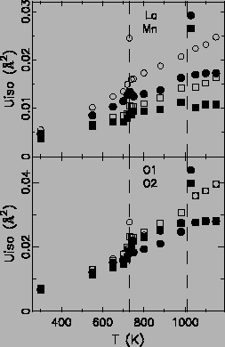
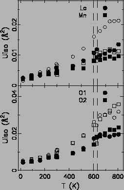 |
The lattice and MnO6 octahedron appear to be more metrically normal
upon increasing temperature. We can define some geometric parameters
to characterize the distortions in the following. The lattice
orthorhombicity factor D is defined as
where a and b are the in-plane lattice constants. The distortion
parameter 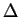
of a coordination polyhedron MON is
|
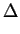 = 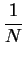 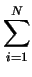 {(bi - 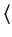 b)/b}2,
|
(3.3) |
where bi is the ith M-O bond length and
 b
b is their average. One important parameter frequently
quoted in the literature is the tolerance factor defined as
is their average. One important parameter frequently
quoted in the literature is the tolerance factor defined as
|
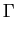 = 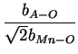 ,
|
(3.4) |
where bA-O is the distance between the A site and
the nearest oxygen, and bMn-0 the average Mn-O bond length. In a
perfect cubic system, the tolerance factor 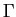
is equal to
1.0. We show the above defined parameters in
Fig. 3.23.
Figure:
Results from LaMnO3(A) NPDF data are shown in the left
panel; while LaMnO3(B) SEPD data in the right. Both PDF (filled
symbols) and Rietveld (open symbols) refined values are shown. (up)
The distortion parameters for lattice, MnO6 octahedron, and
LaO12 polyhedron. (down) The tolerance factor .
|
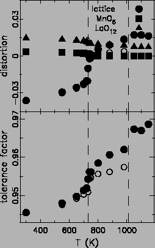
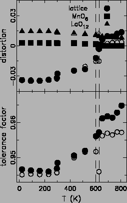
|
The main result is the reduction of lattice distortions in the O and
R phases. Anomalies are evident across the JT transition, while OR
transition appears to be a rather smooth crossover. The tolerance
factor is approaching the ``perfect system'' value from below
(noting that
> 1.0 is not possible), but does not reach 1.0
even at the R phase.
The smaller than unity tolerance factor also means that the
MnO6 octahedra have to tilt for self accommodating in the lattice
matrix. In the orthorhombic phase, there are two Mn-O-Mn angles, while
only one in the R phase. Those Mn-O-Mn angles are not 180 degrees due
to the tilt of MnO6 octahedra around the pseudo-cubic [111]
direction. The average tilt angle
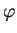
can be
computed from the two Mn-O-Mn angles 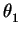
and 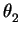
by
cos = = 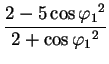 , |
|
|
(3.5) |
cos = = 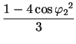 , |
|
|
(3.6) |
and
= (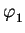
+ 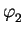
)/2. Another set of angles of interest is between the O-Mn-O
triplets within one MnO6 octahedron. Fig. 3.24
shows the development of these angles with temperature.
Figure 3.24:
Results from LaMnO3(A) NPDF data are shown in the left
panel; while LaMnO3(B) SEPD data in right. Both PDF (filled symbols)
and Rietveld (open symbols) refined values are shown. (up) the two
Mn-O-Mn angles and , (middle) the MnO6 octahedral tilt angles , (
,
), and their average
(
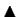
) (down) the O-Mn-O angles within one MnO6 octahedron.
|
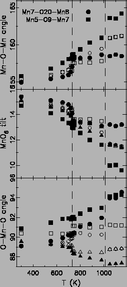
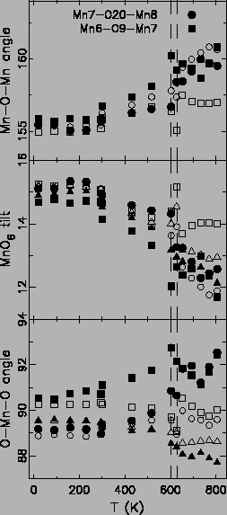 |
We need to mention that for these results, the Pbnm model was used
in PDF refinements of the R phase, which actually has a higher
symmetry
R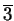
c. If space group
Rc is used in
PDF refinements, the same results were obtained as from the Rietveld
refinements. The use of lower symmetry group Pbnm for the R phase
aimed to look for local structure motifs, which would otherwise be
constraint by the
Rc symmetry. The trend is that Mn-O-Mn
angles are getting more ``straight'', i.e. approaching 180
degrees. However, change of the average tilt angle is not
drastic, and does not show anomalous decrease upon either phase
transition. We thus can not simply attribute the change of lattice
constants and Mn-O bond lengths without careful thoughts. The exact
picture can not be obtained without knowing the local structure in
disordered systems (discussed later). The O-Mn-O angles are rather
intriguing. The Mn-O bonds are not orthogonal even in the O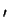
phase, probably due to the lattice strains. However, this
non-orthogonality seems to increase with increasing temperature, and
shows a jumping at the JT transition. We think this is an indication
of increasing lattice strain in the high temperature phases.
The MnO6 octahedral JT distortion has been characterized by the
normal JT modes such as
Q2 = 2(l - s)/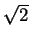
and
Q3 = 2(2m - l - s)/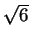
, where the l, s, m are the long, short, and
medium Mn-O bond lengths. The ground-state wave functions  and
and
 in the eg state are
given [140,141,82] by
in the eg state are
given [140,141,82] by
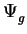 = c1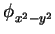 + c2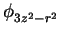 , |
|
|
(3.7) |
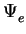 = c2 - c1, |
|
|
(3.8) |
where c1 and c2 are coefficients obtained from
relations:
tan = Q2/Q3 and
tan/2 = c1/c2.
The self-normalization condition
c12 + c22 = 1 should also be
satisfied. In the absence of octahedral distortions, we should obtain
c1 = c2 = 0.7071, i.e. orbitals
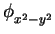
and
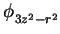
are degenerate. Those parameters are shown in
Fig. 3.25.
Figure:
Results from LaMnO3(A) NPDF data
are shown in the left panel; while LaMnO3(B) SEPD data in
right. Both PDF (filled symbols) and Rietveld (open symbols) refined
values are shown. (up) The Q2 and Q3 values, (down) the c1
and c2 values.
|
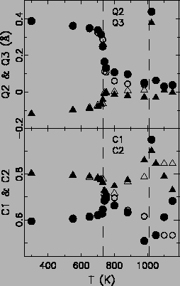
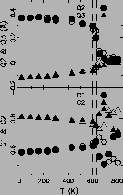 |
Both Q2 and Q3 values approach zero as the MnO6 octahedral JT
distortion diminishes, which is as expected. As the Q2 mode is more
pronounced at low T, the
orbital is more preferably
occupied, as is evident from the large c2 values. Upon increasing T
and reducing the average MnO6 JT distortion, c1 and c2 merge
to the equal probability value of 0.7071. Above TJT, c1 and c2
values are not physically meaningful, as the distortion is essentially
gone as from the average structure.
Xiangyun Qiu
2005-02-18